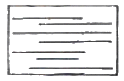
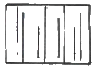
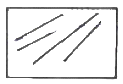
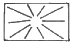
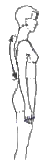
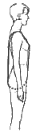
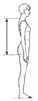
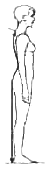
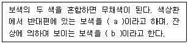

제품디자인산업기사 (2010-05-09 기출문제)
1과목: 제품디자인론
1. 다음 중 제품디자인의 주목적에 해당되는 조건은?
- 기능성
- 첨단성
- 장식성
- 유행성
(정답률: 70%)

2. 다음 중 제품의 차별화에 대한 설명으로 적합하지 않은 것은?
- 제품을 새롭게 발전시키기 위한 상품의 다양화를 의미한다.
- 사회계층의 다양한 욕구충족을 위한 제품의 공급을 의미한다.
- 제품의 차별화는 제품디자이너에게 있어서 제품의 발전을 의미한다.
- 제품의 차별화는 시장의 침체화를 가져온다.
(정답률: 75%)
3. 다음 중 디자인의 보호 및 이용을 도모함으로써 디자인의 창작을 장려하여 산업발전에 이바지함을 목적으로 하는 법은?
- 특허법
- 실용실안법
- 디자인보호법
- 상표법
(정답률: 70%)
4. 팝(pop) 디자인 운동과 관련이 없는 것은?
- 대중문화
- 저속한 모방
- 경량성과 이동성
- 역동성과 움직임
(정답률: 80%)
5. 모더니즘(Modernism)이 거부했던 역사와 전통의 중요성을 재인식하고 적극 도입하여 과거로의 복귀와 디자인에서의 의미를 추구한 운동은?
- 아르누보(Art Nouvead)
- 포스트모더니즘(Post-modernism)
- 하이테크(High-tech)
- 해체주의(Deconstructivism)
(정답률: 85%)
6. 미국의 자동차회사 포드는 오랫동안 모델 T카들을 3S를 바탕으로 가격을 낮춤으로 경쟁력을 지속시킬 것으로 기대했다. 다음 중 3S에 해당하지 않는 것은?
- 제품의 단순화
- 부품의 표준화
- 외형의 세련화
- 공정의 전문화
(정답률: 62%)
7. 「기능은 형태를 낳는다」는 유명한 공리(公理)를 도입하여 기능주의의 사고방식을 발전시켜 공헌한 대표적인 사람은?
- Norman Bel Geddes
- Louis Sullivan
- K.Mosere
- Henry Van de Velde
(정답률: 59%)
8. 아이디어 발상 및 전개 단계에서 다음 중 필요성이 가장 적은 것은?
- 프리젠테이션 모델링
- 스크래치 스케치
- 아이디어 스케치
- 러프 모델링
(정답률: 80%)
9. 우리나라 산업디자인 분야 진흥의 본산인 한국디자인 포장센터(현 : 한국디자인진흥원)가 설립된 해는?
- 1960년
- 1970년
- 1980년
- 1987년
(정답률: 64%)
10. 다음 구도 중 구심성이 있으면서 가장 동적인 느낌의 것은?




(정답률: 82%)
11. 마케팅에 있어서 고객 특성에 근거한 시장 세품화의 분류 항목은?
- 라이프 스타일
- 가격의 탄력성
- 상표의 인지도
- 제품의 효용도
(정답률: 80%)
12. 브레인스토밍의 원칙으로 거리가 먼 것은?
- 비판하지 않는다.
- 사회자의 지시에 따라 의견을 교환한다.
- 자유분방하게 한다.
- 질보다 양을 우선한다.
(정답률: 80%)
13. 크기가 없는 점과 폭이 없는 선의 형태적 분류는?
- 자연적 형태
- 이념적 형태
- 현실적 형태
- 인위적 형태
(정답률: 69%)
14. 미술과 공업과 수공작의 협력에 의한 조형의 양질화를 목표로 독일에서 결성된 단체는?
- DWB
- Bauhaus
- ColD
- ICSID
(정답률: 62%)
15. 몬드라인의 구성적 성격으로 형성된 디자인 운동은?
- 드 스틸(De Stil)
- 아르누보(Atr Nouveau)
- 세제션(Sezession)
- 구성주의(Constructivism)
(정답률: 62%)
16. 제품의 수명주기를 각 단계별로 계획, 지도, 통제하는 것은?
- 제품계획
- 제품정책
- 제품관리
- 제품개발
(정답률: 53%)
17. 제품 디자인 개발 시 고려사항으로 거리가 먼 것은?
- 재료 및 질감
- 기능 및 구조
- 사용자와 사용환경
- 디자이너의 취향
(정답률: 82%)
18. 신제품개발에 있어서 제품 디자인과 가장 밀접한 관계를 갖는 디자인 분야는?
- 산업디자인과 실내디자인
- 시각디자인과 건축디자인
- 산업디자인과 공학디자인
- 공학디자인과 시각디자인
(정답률: 83%)
19. Bauhaus의 창설자는?
- William Morris
- Walter Gropius
- Louis Sullivan
- C.R Ashbee
(정답률: 58%)
20. 2차 세계대전 이후의 디자인운동이 아닌 것은?
- 하이퍼리얼리즘
- 포스트모더니즘
- 레이트모더니즘
- 퓨리즘
(정답률: 58%)
2과목: 인간공학
21. 다음 중 소음성 난청이 가장 잘 발생할 수 있는 주파수의 범위로 옳은 것은?
- 1000 ~ 2000Hz
- 3000 ~ 5000Hz
- 10000 ~ 12000Hz
- 13000 ~ 15000Hz
(정답률: 46%)
22. 다음 중 인체측정자료의 활용방법에 있어 최소집단치를 적용하는 경우는?
- 비상구의 높이
- 은행의 계산대
- 조종장치까지의 거리
- 혁대의 길이
(정답률: 45%)
23. 다음 중 일반적인 의자의 설계원칙에 있어 의자 좌판의 깊이와 폭에 관한 설명으로 옳은 것은?
- 폭과 깊이 모두 작은 사람에게 적합하도록 한다.
- 폭과 깊이 모두 큰 사람에게 적합하도록 한다.
- 폭은 작은 사람에게 적합하도록 하고, 깊이는 큰 사람에게 적합하도록 한다.
- 폭은 큰 사람에게 적합하도록 하고, 깊이는 작은 사람에게 적합하도록 한다.
(정답률: 53%)
24. 다음 중 자극이 중지된 후에도 잠시 동안 자극 표현을 지속하는 임시 저장 메커니즘이 있는 것과 관련된 것은?
- 인식(recognition)
- 감각보관(sensory storage)
- 작업기억(working memory)
- 학습연상(scholarship association)
(정답률: 59%)
25. 다음 중 눈에 대한 설명으로 틀린 것은?
- 동공의 크기는 홍채(iris)근육의 작용으로 변한다.
- 간상(rod)세포는 밤에 주로 기능을 한다.
- 원추(cone)세포는 주로 망막의 중심부에 있다.
- 수정체는 가까운 곳을 볼 때보다 먼 곳을 볼 때 두꺼워진다.
(정답률: 58%)
26. 계기판에 등이 4개가 있고, 그 중 하나에만 불이 켜지는 경우와 같이 4개의 대안이 존재한 경우 정보량은 얼마인가?
- 0.5 bit
- 1 bit
- 2 bit
- 4 bit
(정답률: 39%)
27. 눈이 조명도의 변화에 따라 밝기에 익숙해지는 경과를 무엇이라 하는가?
- 순응
- 휘광
- 절대역
- 변별역
(정답률: 76%)
28. 다음 중 자동차의 조종간을 설계할 때 가장 적절하게 응용되는 양립성은?
- 공간적 양립성(spatial compatibility)
- 운동 양립성(movement compatibility)
- 개념적 양립성(conceptual compatibility)
- 형식 양립성(madality compatibility)
(정답률: 59%)
29. 다음 중 일반적으로 사무실 및 산업 상황에서의 추천 광도비로 가장 적절한 것은? (단, 광도비는 주어진 장소와 광도의 비로 표현한다.)
- 1 : 1
- 3 : 1
- 7 : 1
- 10 : 1
(정답률: 64%)
30. 다음 중 체성감관(proprioceptor)에 의해 경험하게 되는 생리적 현상이 아닌 것은?
- 멀미
- 전신진동
- 방향감각혼란
- 착시
(정답률: 43%)
31. 다음 중 수치를 정확히 읽어야 할 경우에 가장 적합한 표시장치의 형태는?
- 동침형 표시장치
- 동목형 표시장치
- 계수형 표시장치
- 수직-수평형 표시장치
(정답률: 53%)
32. 한국인 인체치수조사 사업에 있어 표준인체측정항목 중 등길이를 나타낸 것은?




(정답률: 65%)
33. 다음 중 소음의 강도를 나타내는 단위로 옳은 것은?
- Lux
- IL
- dB
- nit
(정답률: 75%)
34. 다음 중 기계가 인간을 능가하는 기능에 해당하는 것은?
- 반복적인 작업을 신뢰성 있게 수행한다.
- 상황적 요구에 따라 순간적인 결정을 한다.
- 관찰을 통하여 일반화하여 귀납적으로 추리한다.
- 주위의 이상이나 예기치 못한 사건들을 감지한다.
(정답률: 65%)
35. 다음 중 열평형을 유지하기 위해서 증발해야 하는 발한량(發汗量)으로 열부하를 나타내는 지수는?
- 열압박지수
- 열증발지수
- Oxford지수
- 열손실지수
(정답률: 44%)
36. 다음 중 정신활동의 척도로 활용되는 시각적 점멸 융합 주파수(VFF)에 관한 설명으로 틀린 것은?
- 연습의 효과는 아주 적다.
- 휘도만 같으면 색은 VFF에 영햐을 주지 않는다.
- VFF는 조명 강도의 대수치에 선형적으로 반비례한다.
- VFF는 사람들 간에는 큰 차이가 있으나 개인의 경우 일관성이 있다.
(정답률: 15%)
37. 다음 중 생체리듬에 관한 설명으로 옳은 것은?
- 육체적 리듬(Physical rhythm)은 28일의 반복주기를 갖는다.
- 지성적 리듬(Intellectual rhythm)은 23일의 반복주기를 갖는다.
- 감정적 리듬(Sensiticity rhythm)은 33일의 반복주기를 갖는다.
- 위험일은 P, S, I의 리듬이 (-)에서 (+)로, 또는 (+)에서 (-)로 변화하는 점을 말한다.
(정답률: 56%)
38. 다음 중 동작경제의 원칙에 있어 공구 및 설비에 관한 원칙에 해당하는 것은?
- 공구의 기능을 결합하여 사용하도록 한다.
- 두 손의 동작은 같이 시작하고 같이 끝나도록 한다.
- 모든 공구나 재료는 자기 위치에 있도록 한다.
- 두 팔의 동작은 서로 반대 방향으로, 대칭적으로 움직인다.
(정답률: 42%)
39. 다음 중 신체부위의 기본동작에 관한 설명으로 옳은 것은?
- 굴곡(flexlon)은 팔꿈치에서 팔 굽히기처럼 관절에서 각도가 감소하는 동작이다.
- 외선(abduction)은 팔을 수평으로 편 위치에서 수직위치로 내릴 때처럼 중심선으로 향하는 동작이다.
- 내전(adduction)은 팔을 옆으로 들 때처럼 신체 중심선에서 멀어지는 동작이다.
- 신전(extension)은 팔을 어깨에서 원형으로 돌리는 동작처럼 신체부위의 원형동작이다.
(정답률: 53%)
40. 다음 중 영상표시단말기(VDT) 취급시 작업자세에 관한 설명으로 틀린 것은?
- 작업자의 손목을 지지해 줄 수 있도록 작업대 끝 면과 키보드의 사이는 15cm 이상을 확보한다.
- 작업자의 시선은 수평선상으로부터 아래로 10 ~ 15° 이내로 한다.
- 눈으로부터 화면까지의 시거리는 40cm 이상을 유지한다.
- 무릎의 내각(knee angle)은 120° 이상이 되도록 한다.
(정답률: 67%)
3과목: 공업재료 및 모형제작론
41. 씨앗의 표피세포에서 추출하는 섬유는?
- 모
- 마
- 면
- 견
(정답률: 64%)
42. 일반적인 금속의 성질에 대한 설명 중 틀린 것은?
- 광택을 띠며 열과 빛을 반사하는 힘이 크다.
- 열, 전기의 양도체이다.
- 경도가 크고 내마멸성이 큰 것이 많다.
- 비중이 작다.
(정답률: 72%)
43. 건조된 목재를 수증기 중에 방치하면 수분은 세포막에 흡수되며, 더 이상 흡수될 수 없는 한계를 섬유 포화점이라 하는데, 목재의 섬유 포화점은?
- 15% 이하
- 30% 전후
- 40% 전후
- 50% 이상
(정답률: 60%)
44. 다음 중 수분의 영향을 가장 적게 받는 재료는?
- 금속
- 종이
- 플라스틱
- 목재
(정답률: 70%)
45. 다음 중 흡수성이 거의 없고 두드리면 금속성 소리가 나며 고급식기류·장식품 등에 사용되는 것은?
- 자기
- 석기
- 도기
- 토기
(정답률: 58%)
46. 다음 중 목재의 성질에 대한 설명으로 틀린 것은?
- 목재의 밀도와 무게는 목재 속의 수분에 따라 좌우된다.
- 목재의 전단력은 섬유의 평행방향이 직각방향보다 강하다.
- 목재의 비중은 목재의 물리적 성질과 강도를 좌우하는 가장 큰 요인이다.
- 흡흠률은 비중이 작은 것이 크며 일반적으로 목재는 방음 재료로 적당하다.
(정답률: 43%)
47. 문을 바르는데 사용하는 참종이(창호지)의 원료는?
- 오동나무 섬유
- 닥나무 섬유
- 소나무 섬유
- 라왕 섬유
(정답률: 66%)
48. 다음 중 유기재료는?
- 목재
- 금속
- 유리
- 도자기
(정답률: 56%)
49. 연마 방법 중 귀금속 공예품, 시계부품, 주사바늘 등의 연마에 사용되는 전기화학적 연마법은?
- 바렐(Barrel) 연마
- 그라인더 연마
- 버프 연마
- 전해 연마
(정답률: 40%)
50. 가축제품에 대한 내용이 옳게 설명된 것은?
- 우피 – 은면층이 평활, 미려하고 성질이 견고하여 사용량이 많다.
- 마피 – 마찰에 강하고 평호라하며 감촉이 좋다.
- 양피 – 유연하고 은면층이 얇아 방한성이 우수하다.
- 돈피 – 은면층이 얇고 모공이 깊어 표현이 다소 조잡하다.
(정답률: 42%)
51. 재표에 외력을 가하면 재료 내부에 변형이 생긴다. 외력이 어느 정도 이상 크게 되면 외력을 제거하여도 원상으로 복귀되지 않고 변형이 남게 되는데 이러한 성질을 무엇이라고 하는가?
- 탄성
- 소성
- 연성
- 인성
(정답률: 25%)
52. 제품 모델링을 통해서 검토될 수 있는 내용으로 거리가 먼 것은?
- 양강
- 질감
- 충격강도
- 색채
(정답률: 60%)
53. 사출성형에 관한 설명 중 틀린 것은?
- 용융된 플라스틱 재료를 닫혀진 음형의 공동부에 가압 주입하여 성형품을 만드는 방법이다.
- 사출성형용 재료는 열가소성 수지를 주로 사용한다.
- 치수의 정밀도가 높고, 품질이 안정된 성형품을 얻을 수 있다.
- 소량제품 생산에 가장 적합하다.
(정답률: 67%)
54. 다음 중 빠르고 손쉽게 만들기 위해 재료의 가공성이 고려되어야 하는 모델은?
- 프로토타입 모델
- 러-프 목업 모델
- 프리젠테이션 모델
- 워킹 모델
(정답률: 50%)
55. 다음 중 계측에 사용되는 기구는?
- 핸드드릴
- 벨트샌더
- 버어니어캘리퍼스
- 스프레이건
(정답률: 65%)
56. 금속 성형을 위한 가공방법 중에서 모재(母材)의 표면을 파내고 이 자리에 다른 소재를 채워 넣는 방법으로 금속이나 도자기에 많이 사용하는 방법은?
- 시밍(Seaming)
- 포밍(Forming)
- 버핑(Buffing)
- 상감(Inlay)
(정답률: 35%)
57. 색과 색이 만나는 경계면이 서로 겹치도록 하는 제판기법은?
- 블리드(bleed)
- 트래핑(trapping)
- 믹싱(mixing)
- 템퍼링(tempering)
(정답률: 30%)
58. 다음 중 모형 재료로 금속을 주로 사용하게 되는 경우는?
- 부분적이며, 세밀한 표현이 요구될 때
- 중후한 색채가 요구될 때
- 다량으로 부품을 만들어야 할 때
- 부드러운 자유곡선면이 요구될 때
(정답률: 37%)
59. 종이모형(paper model)제작의 단점은?
- 가공하기 어렵다.
- 특수한 공구나 환경이 필요하다.
- 영구보관이 어렵다.
- 손이나 작업장 등이 더렵혀진다.
(정답률: 65%)
60. 생산 시와 같은 재료, 혹은 외관에 가까운 재료를 사용하고 정밀한 마무리 등으로 최종의 이미지에 가까운 모형을 얻을 수 있는 모형은?
- 수지모형
- 복합재모형
- 목재모형
- 석고모형
(정답률: 53%)
4과목: 색채학
61. 색채계획에 있어 효고적인 색 지정을 하기 위하여 디자이너가 갖추어야 할 능력으로 거리가 먼 것은?
- 색채변별능력
- 색채조색능력
- 색채구성능력
- 심리조사능력
(정답률: 58%)
62. 색의 온도강을 좌우하는 가장 큰 요소는?
- 색상
- 명도
- 채도
- 면적
(정답률: 61%)
63. 다음 중 문·스펜서의 색채 조화 이론과 관련이 있는 것은?
- 조화의 부조화
- 질서의 원리
- 친숙의 원리
- 윤성조화
(정답률: 50%)
64. 다음 중 ( ) 안에 알맞은 것은?

- a : 회전보색, b : 잔상보색
- a : 물리보색, b : 심리보색
- a : 심리보색, b : 물리보색
- a : 잔상보색, b : 회전보색
(정답률: 43%)
65. 색의 중량감에 관한 설명 중 잘못된 것은?
- 명도가 낮은 것은 무겁게 느껴진다.
- 명도 보다는 색상의 차이가 크게 좌우된다.
- 채도 보다는 명도의 차이가 크게 좌우된다.
- 명도가 높은 것은 가볍게 느껴진다.
(정답률: 69%)
66. 다음 색체계에 대한 설명으로 옳은 것은?
- 해리스(Moses Harris)의 색체계는 혼합된 합성물의 써클을 기본으로 하여 가법혼색을 설명하였다.
- 룽게(Philipp Otto Runge)는 빨강, 파랑, 노랑을 기본으로 하는 이상적인 COLOR-SOLID를 구성하였다.
- 슈브뢸(Michel Eygene Chevreul)은 삼각형 모형의 색상환으로 동시대비를 설명하였다.
- 베졸트(Willhelm von Bezold)는 심리적인 반대색설을 대표하는 색상환으로 잔상색을 설명하였다.
(정답률: 35%)
67. 다음 중 밝고 경쾌한 음과 연관된 색은?
- 오렌지, 노랑
- 회색, 검정
- 에메랄드 그린, 남색
- 무채색, 탁색
(정답률: 65%)
68. 색채관리의 진행순서 중 옳은 것은?
- 색의 설정 → 발색 및 착색 → 검사 → 판매
- 색의 설정 → 검사 → 발색 및 착색 → 판매
- 발색 및 착색 → 검사 → 색의 설정 → 판매
- 발색 및 착색 → 검사 → 판매 → 색의 설정
(정답률: 53%)
69. 오스트발트 표색계의 기본 4색의 아닌 것은?
- yellow
- red
- seagreen
- purple
(정답률: 53%)
70. 먼셀 색채 조화의 원리와 거리가 먼 것은?
- 동일색상조화시 명도 및 채도에 관하여 정연한 간격으로 했을 때 조화된다.
- 명도는 같으나 채도가 다른 반대색끼리는 약한 채도에 넓이를 주고 강한 채도에 작은 면적을 주면 조화된다.
- 채도가 같고 명도가 다른 반대색끼리는 회색척도에 관하여 정연한 간격으로 했을 때 조화된다.
- 회색은 회색척도의 5개 단계에 관하여 정연하고 고른 간격으로 했을 때 잘 조화된다.
(정답률: 25%)
71. “두 색은 이들은 혼색시킬 때 완전한 무채색이 되는 경우에만 잘 조화된다.”라고 주장한 사람은?
- 럼포드(Rumford)
- 아이젠크(H.J. Eysenck)
- 버크호프(G.D. Blrkhoff)
- 슈브뢸(M.E. Chevreul)
(정답률: 39%)
72. 스펙트럼은 빛의 어떠한 현상에 의한 것인가?
- 흡수
- 굴절
- 투과
- 직진
(정답률: 64%)
73. 수술실의 의사들이 초록색의 가운을 입는 이유는 색의 어떤 현상 때문인가?
- 색의 명도대비
- 보색잔상
- 색의 면적대비
- 색의 동화현상
(정답률: 62%)
74. 적색에 검정색을 혼합했을 때 채도의 차이는?
- 높아진다.
- 낮아진다.
- 혼합하기 전과 같다.
- 시간이 갈수록 높아진다.
(정답률: 62%)
75. 먼셀 색체계에서 시각적 중립점인 N5인 물리학적인 반사율을 옳게 나타낸 것은?
- 3.1%
- 19.8%
- 43.1%
- 78.7%
(정답률: 53%)
76. 상영 중인 영화관에 들어서서 좀 시간이 지나면 어두운 주위의 물체를 식별할 수 있다. 이는 눈의 어떤 순응상태를 말하는가?
- 명순응
- 암순응
- 색순응
- 무채순응
(정답률: 65%)
77. 먼셀 기호 '2.58 4/8'에서 명도 값은?
- 2.5
- 4
- 8
- 12
(정답률: 56%)
78. 한국의 전통색의 상징에 대한 설명으로 옳은 것은?
- 적색은 남쪽을 상징한다.
- 흰색은 중앙을 상징한다.
- 황색은 동쪽을 상징한다.
- 청색은 북쪽을 상징한다.
(정답률: 50%)
79. 다음 중 채도가 가장 높은 색상은?
- 노랑
- 파랑
- 보라
- 초록
(정답률: 64%)
80. 같은 물체의 색이라도 조명에 따라 색이 달라져 보이는 현상은?
- 작열현상
- 조건등색
- 연색성
- 표준광
(정답률: 55%)